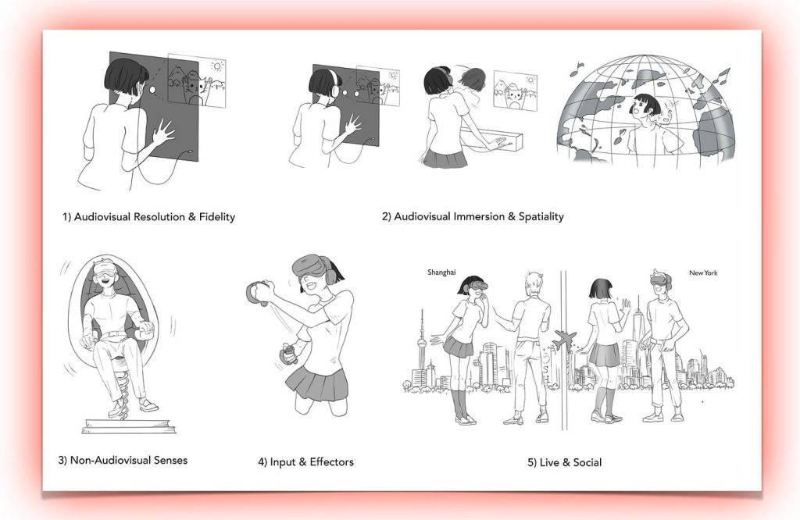
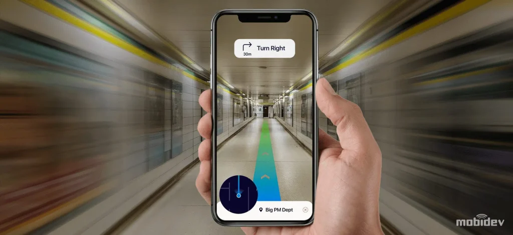
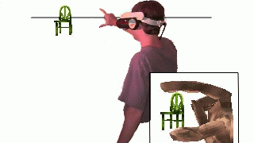

These three articles this week have made me rethink how exactly people are defined and involved in my AR/VR Winchester Cathedral project. Previously, I might have been more concerned about whether the visuals are beautiful enough and whether the functions can be implemented. But now, I’ve started to focus on a more fundamental question which is how exactly do users exist within this experience?

Naimark, M. (2018). VR / AR Fundamentals — 3) Other Senses (Touch, Smell, Taste, Mind) [Online image]. Available at: https://michaelnaimark.medium.com/vr-ar-fundamentals-3-other-senses-haptic-smell-taste-mind-e6d101d752da (Accessed: 5 March 2025)
Hayles poses a very challenging question in How We Became Posthuman: Are we too quick to understand “human beings” merely as “consciousness” or “data”? Just as VR experiences often strive for a sense of “immersion”, yet they confine the body within a headset and controllers. She reminds me that human experience is corporeal. For example, in the actual Winchester Cathedral, you can feel the temperature of the air, the spatial sense of the echoes, and the sensation of your feet on the stone slabs. However, in VR, if we only replicate this space using visuals and sounds, we are actually overlooking the complexity of the body’s presence. This makes me think that perhaps I should try to incorporate some more “sensory” elements, such as the spatial positioning of ambient sound effects, or even guide players to observe certain details in the cathedral to enhance their physical perception of the environment.

MobiDev. (2025). Augmented Reality Indoor Navigation App Development [Online image]. Available at: https://mobidev.biz/blog/augmented-reality-indoor-navigation-app-development (Accessed: 5 March 2025)
Ingold’s concept of “lines” has also deeply impressed me. He states that life is not a series of “points”, but rather a collection of “lines”, the trajectories of movement and the paths of walking. This makes me realize that when designing the interaction paths in VR, I shouldn’t just “arrange scenic spots”, but rather design “journeys”. For instance, I can guide users to walk from the main hall to the altar, and from the tower to the cellar. Each point is a node on the line, but what’s more important is how they move, and their “route” itself constitutes a form of narrative. I could even use light, sound, or vibrations to indicate directions, making the “process of walking” an integral part of the experience.

Pierce, J.S., Forsberg, A., Conway, M.J., Hong, S., Zeleznik, R. & Mine, M.R. (1997). Image Plane Interaction Techniques in 3D Immersive Environments [Online image]. Available at: https://www.cs.cmu.edu/~stage3/publications/97/conferences/3DSymposium/HeadCrusher/index.html (Accessed: 5 March 2025)
Manovich’s “definition of new media” may seem highly technical, but it’s actually very relevant to my current creative work. He says that new media is variable, modular, and programmatically controlled. It sounds quite rational, but I’ve realized that these are the most prominent characteristics of AR/VR, every user experience can be different. In other words, when I’m designing this digital version of Winchester Cathedral, I’m actually creating a “fluid history”. Instead of telling a fixed story, I’m providing a series of “nodes” and “modules” that allow users to combine and experience them through their own paths. This also makes me want to further develop the “non-linear narrative” function: for example, different sounds, images, or texts are triggered based on where the user makes choices or lingers, making history more “open”.
In conclusion, this week’s reading has made me realize that my creative work is not about “recreating a building”, but rather about creating a new relationship among “people, space, and time”. And to achieve this, I must focus not only on the “content” or “form”, but also on the “way of existence” of users within this experience.
Reading list
- Hayles, N. Katherine (1999). How We Became Posthuman, Chapter 1
- Ingold, T. (2007). Lines: A Brief History, Chapter 1
- Manovich, L. (2001). The Language of New Media, Chapter 1: What is New Media?